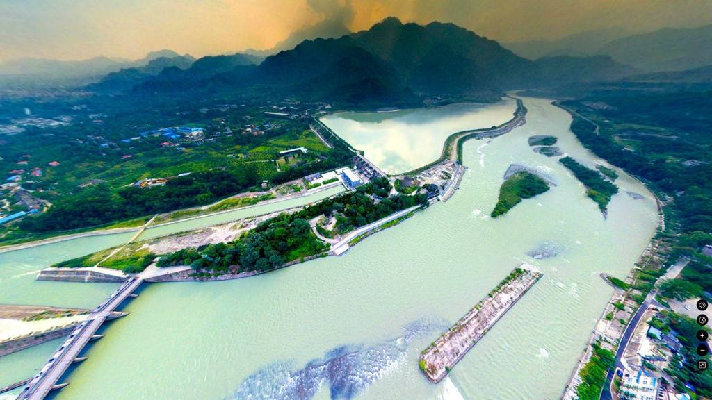
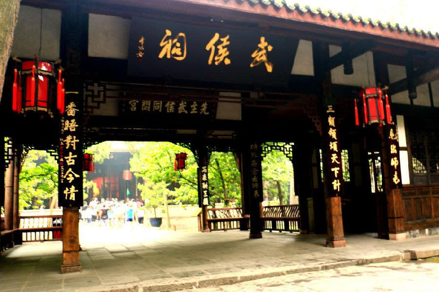
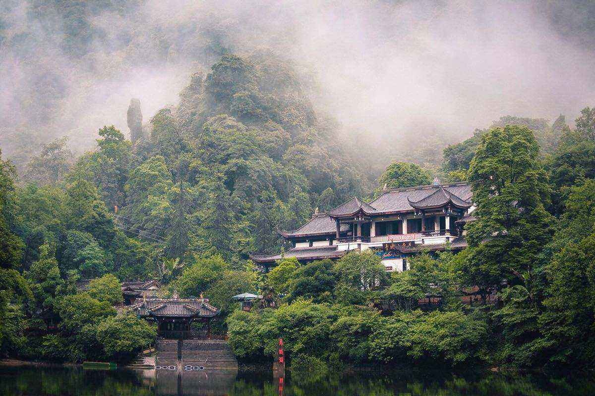
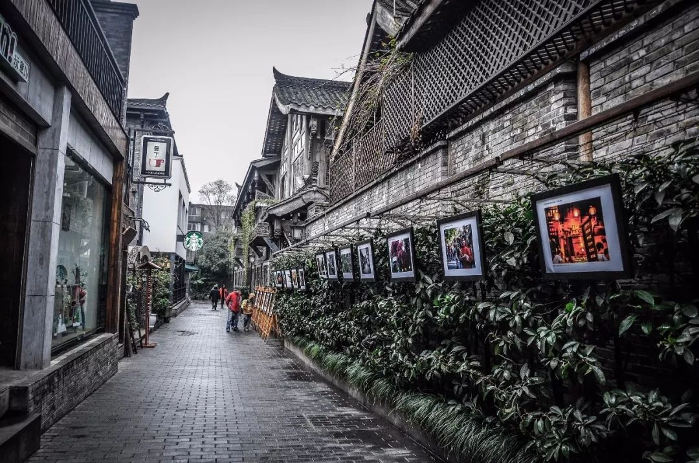
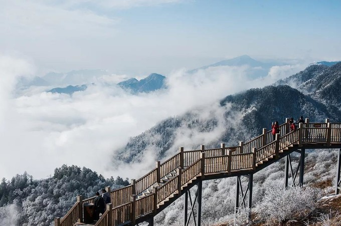

-
都江堰 By Baidu,Link
都江堰是世界文化遗产（2000年被联合国教科文组织列入“世界文化遗产”名录）、世界自然遗产（四川大熊猫栖息地）、全国重点文物保护单位、国家级风景名胜区、国家AAAAA级旅游景区。 都江堰位于四川省成都市都江堰市城西，坐落在成都平原西部的岷江上，始建于秦昭王末年（约公元前256～前251） [1] ，是蜀郡太守李冰父子在前人鳖灵开凿的基础上组织修建的大型水利工程，由分水鱼嘴、飞沙堰、宝瓶口等部分组成，两千多年来一直发挥着防洪灌溉的作用，使成都平原成为水旱从人、沃野千里的"天府之国"，至今灌区已达30余县市、面积近千万亩，是全世界迄今为止，年代最久、唯一留存、仍在一直使用、以无坝引水为特征的宏大水利工程，凝聚着中国古代劳动人民勤劳、勇敢、智慧的结晶。 都江堰风景区主要有伏龙观、二王庙、安澜索桥、玉垒关、离堆公园、玉垒山公园、玉女峰、灵岩寺、普照寺、翠月湖、都江堰水利工程等。 2018年8月13日，加拿大萨斯卡通召开的国际灌排委员会第69届国际执行理事会，执理会全体会议上公布了2018年(第五批)世界灌溉工程遗产名录。其中中国的都江堰等4个项目全部申报成功。
-
武侯祠 By Baidu,Link
武侯祠（汉昭烈庙），全国重点文物保护单位，国家AAAA级旅游景区，国家一级博物馆。 武侯祠位于四川省成都市武侯区，肇始于公元223年修建刘备惠陵时，它是中国唯一的一座君臣合祀祠庙和最负盛名的诸葛亮、刘备及蜀汉英雄纪念地，也是全国影响最大的三国遗迹博物馆。1961年国务院公布为首批全国重点文物保护单位，2008年评选为首批国家一级博物馆。 成都武侯祠现占地15万平方米，由三国历史遗迹区（文物区）、西区（三国文化体验区）以及锦里民俗区（锦里）三部分组成，享有“三国圣地”的美誉。
-
青城山 By Baidu,Link
青城山（Mount Qingcheng） ，世界文化遗产青城山-都江堰的主体景区、全国重点文物保护单位、国家重点风景名胜区、国家AAAAA级旅游景区、全球道教天师道圣地，十大洞天之一，中国四大道教名山之一，五大仙山之一，中国道教发源地，成都十景之一。 [1] 青城山位于四川省成都市都江堰市西南，东距成都市区68公里，处于都江堰水利工程西南10公里处。景区面积200平方千米，最高峰老君阁海拔1260米，青城山分为前山和后山，群峰环绕起伏、林木葱茏幽翠，享有“青城天下幽”的美誉。 [2] 全山林木青翠，四季常青，诸峰环峙，状若城廓，故名青城山。丹梯千级，曲径通幽，以幽洁取胜。景区内外，天师洞和圆明宫幽静是青城山的一大特色。
-
宽窄巷子 By Baidu,Link
宽窄巷子位于四川省成都市青羊区长顺街附近，由宽巷子、窄巷子、井巷子平行排列组成，全为青黛砖瓦的仿古四合院落，这里也是成都遗留下来的较成规模的清朝古街道，与大慈寺、文殊院一起并称为成都三大历史文化名城保护街区。 [1] 康熙五十七年（1718年），在平定了准葛尔之乱后，选留千余兵丁驻守成都，在当年少城基础上修筑了满城。民国初年，当时的城市管理者下文，将“胡同”改为“巷子” 。二十世纪80年代，宽窄巷子列入《成都历史文化名城保护规划》。2003年，宽窄巷子街区正式出现在世人的词典中。 [2] 宽窄巷子是国家AA级旅游景区，先后获2009年“中国特色商业步行街”、四川省历史文化名街、2011年成都新十景、四川十大最美街道 [3] 等称号。
-
西岭雪山 By Baidu,Link
西岭雪山，位于四川省成都市大邑县境内，距成都仅95公里，总面积483平方公里，属世界自然遗产、大熊猫栖息地、AAAA级旅游景区、国家重点风景名胜区。 [1-2] 因唐代大诗人杜甫的千古绝句“窗含西岭千秋雪，门泊东吴万里船”而得名。景区内有终年积雪的大雪山，海拔5364米，为成都第一峰。